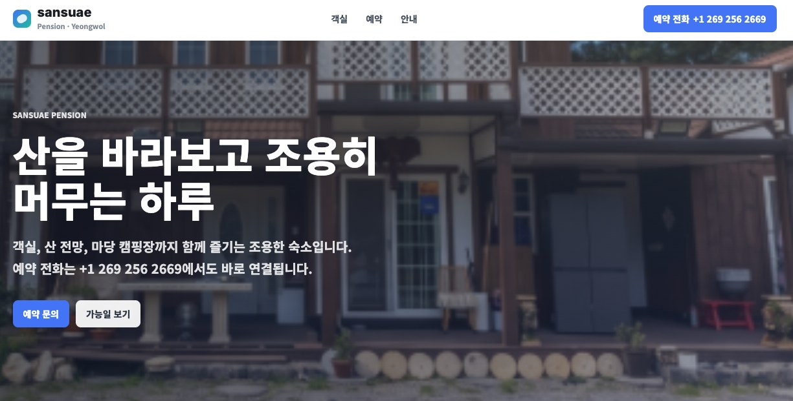
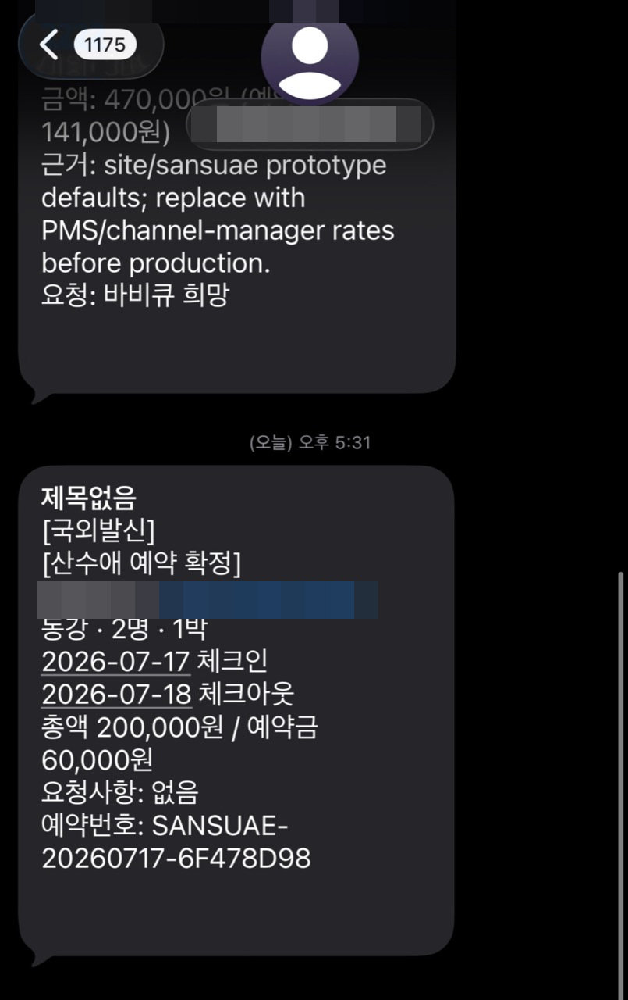

Sansuae Pension
산수애 예약 상담 자동화
강원도 영월에서 펜션을 운영하는 가족 사업의 CS 병목을 줄이기 위해 만든 예약 흐름 자동화 프로토타입입니다. 사람이 매번 동일한 상담 품질을 유지하기 어려운 환경에서, AI가 문의 의도를 정리하고 예약 가능 여부와 확정 단계까지 안내하는 구조를 목표로 설계했습니다.
Intent
반복 예약 문의, 객실 안내, 일정 확인, 확정 안내를 표준화해 운영자의 응답 부담을 줄입니다.
Engine
사용자 입력을 예약 의도, 날짜, 인원, 객실 조건으로 구조화하고 다음 행동을 안내하는 상담 플로우로 설계했습니다.
Usage
고객은 객실과 가능일을 확인하고 예약 문의로 진입합니다. 운영자는 반복 질문보다 예외 처리와 최종 확인에 집중합니다.
AI Reservation FlowCS AutomationHuman Handoff

Reservation Confirmed
예약 완료 시 예약정보 자동 발송
AI가 고객명, 연락처, 객실·인원, 체크인/체크아웃, 금액, 예약번호를 정리해 문자로 발송하는 흐름까지 구현했습니다.